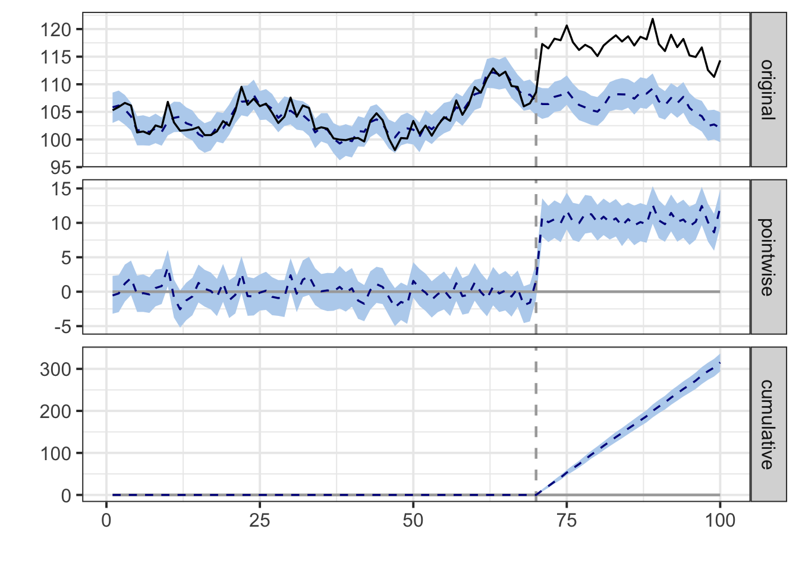
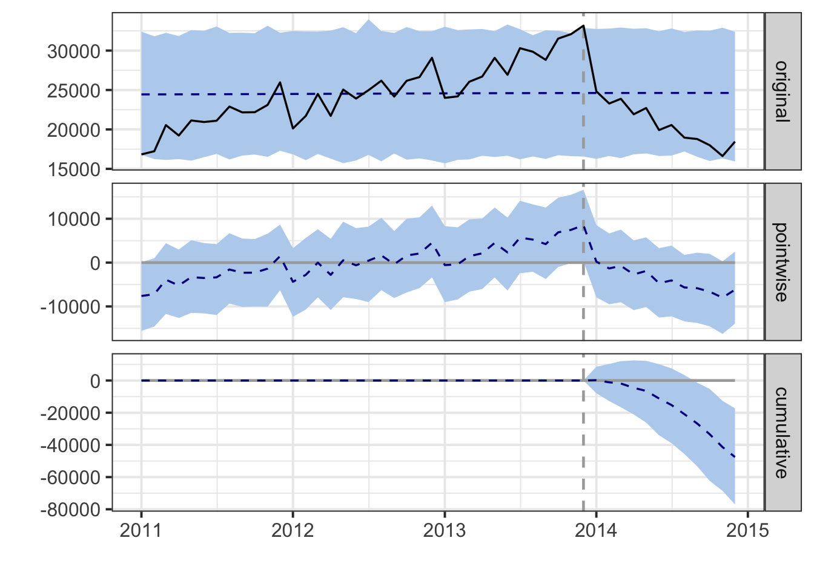
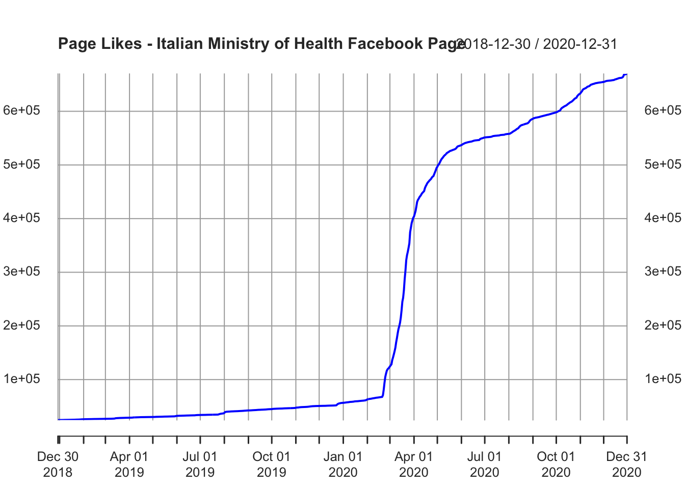

Chapter 11 Interrupted time series analysis using segmented regression
Segmented regression is another common way for analyzing the impact of an intervention. Two good papers explaining the methods of segmented regression are, for example:
- Bernal, J. L., Cummins, S., & Gasparrini, A. (2017). Interrupted time series regression for the evaluation of public health interventions: a tutorial. International journal of epidemiology, 46(1), 348-355.
- Wagner, A. K., Soumerai, S. B., Zhang, F., & Ross‐Degnan, D. (2002). Segmented regression analysis of interrupted time series studies in medication use research. Journal of clinical pharmacy and therapeutics, 27(4), 299-309.
As explained by the latter, “Segmented regression analysis uses statistical models to estimate level and trend in the pre-intervention segment and changes in level and trend after the intervention (or interventions).”.
More exactly, a segmented regression model is structured as follow:
\[Y = b_0 + b_1Time + b_2Intervention + b_3TimeSinceIntervention + e\]
It includes at least:
- an outcome variable (Y);
- a variable that indicates the time 1,2,…,t passed from the start of the series;
- a dummy variable (0/1) for observation collected before (0) or after (1) the intervention;
- a variable measuring the time 1,2,…,t passed since the intervention has occured, and which is equal to zero before the intervention.
The interpretation of coefficients is as follows:
- \(b_0\) is the baseline level at Time 0;
- The Time (\(b_1\)) coefficient indicates the trend (the slope) before the intervention ( change in outcome associated with a time unit increase).
- The Intervention (\(b_2\)) coefficient indicates the immediate effect (level change) induced by the intervention (from the last observation before the intervention to the first one after).
- The Time Since Intervention (\(b_3\)) coefficient indicates the “sustained effect”, i.e., the change in trend after the intervention (the effect for each time point that passes after the intervention). It measures the difference between the slope of the line before and after the intervention. It is also possible to calculate the slope of the line after the intervention by summing up the coefficients of Time and Time Since Treatment (\(b_1 + b_3\))
A good tutorial on this tecnique can be found at the following link: https://ds4ps.org/pe4ps-textbook/docs/p-020-time-series.html.
11.1 CausalImpact
While ARIMA modeling is the classic choice for intervention models, more complex computational apporaches have been developed. We can consider the Bayesian approach implemented in the package CausalImpact developed at Google to estimate causal impacts in a quasi-experimental framework (you can find here a video presentation)9.

# Install and load the package
# install.packages("CausalImpact")
library(CausalImpact)We use the simulated dataset used in the Google tutorial on the package, creating two time series \(y\) and \(x\) of length 100, simulating an abrupt intervention at time 71 determining a permanent increment of 10 points in the \(y\) series.
set.seed(1)
x1 <- 100 + arima.sim(model = list(ar = 0.999), n = 100)
y <- 1.2 * x1 + rnorm(100)
y[71:100] <- y[71:100] + 10
dat <- ts.intersect(y, x1)Then, it is necessary to specify the pre-intervention and post-intervention period. In the pre-intervention period no impact is expected.
pre.period <- c(1, 70)
post.period <- c(71, 100)The function CausalImpact uses the values of the original time series \(y\) in the pre-intervention period, and the predictors correlated to the \(y\) (in this case \(x\)), to forecast the values that \(y\) would have had without the intervention (counterfactual).
To accurately forecast the \(y\) values, which is necessary to obtain valid results from the analysis, it is necessary to have a proper model of the \(y\) series (based on the series itself and its predictors). Then, the differences in the expected (forecasted) \(y\) values without intervention, and the actual \(y\) values following the intervention, are compared in order to estimate the impact of the intervention.
impact <- CausalImpact(dat, pre.period, post.period)By using the function plot on the resulting model, three plots are visualized:
The first panel shows the data and a counterfactual prediction for the post-treatment period. The second panel shows the difference between observed data and counterfactual predictions. This is the pointwise causal effect, as estimated by the model. The third panel adds up the pointwise contributions from the second panel, resulting in a plot of the cumulative effect of the intervention. (…) the above inferences depend critically on the assumption that the covariates were not themselves affected by the intervention. The model also assumes that the relationship between covariates and treated time series, as established during the pre-period, remains stable throughout the post-period.
plot(impact)
Besides plotting the results, it is possible to create a summary of the model, and by adding the argument “report” inside the function summary, a convenient explanations of the results is printed.
summary(impact)## Posterior inference {CausalImpact}
##
## Average Cumulative
## Actual 117 3511
## Prediction (s.d.) 107 (0.37) 3196 (10.96)
## 95% CI [106, 107] [3175, 3217]
##
## Absolute effect (s.d.) 11 (0.37) 315 (10.96)
## 95% CI [9.8, 11] [294.0, 336]
##
## Relative effect (s.d.) 9.9% (0.34%) 9.9% (0.34%)
## 95% CI [9.2%, 11%] [9.2%, 11%]
##
## Posterior tail-area probability p: 0.00101
## Posterior prob. of a causal effect: 99.8993%
##
## For more details, type: summary(impact, "report")summary(impact, "report")## Analysis report {CausalImpact}
##
##
## During the post-intervention period, the response variable had an average value of approx. 117.05. By contrast, in the absence of an intervention, we would have expected an average response of 106.54. The 95% interval of this counterfactual prediction is [105.83, 107.25]. Subtracting this prediction from the observed response yields an estimate of the causal effect the intervention had on the response variable. This effect is 10.51 with a 95% interval of [9.80, 11.21]. For a discussion of the significance of this effect, see below.
##
## Summing up the individual data points during the post-intervention period (which can only sometimes be meaningfully interpreted), the response variable had an overall value of 3.51K. By contrast, had the intervention not taken place, we would have expected a sum of 3.20K. The 95% interval of this prediction is [3.18K, 3.22K].
##
## The above results are given in terms of absolute numbers. In relative terms, the response variable showed an increase of +10%. The 95% interval of this percentage is [+9%, +11%].
##
## This means that the positive effect observed during the intervention period is statistically significant and unlikely to be due to random fluctuations. It should be noted, however, that the question of whether this increase also bears substantive significance can only be answered by comparing the absolute effect (10.51) to the original goal of the underlying intervention.
##
## The probability of obtaining this effect by chance is very small (Bayesian one-sided tail-area probability p = 0.001). This means the causal effect can be considered statistically significant.The authors of the package underline the importance of the statistical assumptions to get valid results, and about possible strategies to ascertain that the assumptions are met, they write the following advice:
Here are a few ways of getting started. First of all, it is critical to reason why the covariates that are included in the model (this was x1 in the example) were not themselves affected by the intervention. Sometimes it helps to plot all covariates and do a visual sanity check. Next, it is a good idea to examine how well the outcome data y can be predicted before the beginning of the intervention. This can be done by running CausalImpact() on an imaginary intervention. Then check how well the model predicted the data following this imaginary intervention. We would expect not to find a significant effect, i.e., counterfactual estimates and actual data should agree reasonably closely. Finally, when presenting or writing up results, be sure to list the above assumptions explicitly, including the priors in model.args, and discuss them with your audience.
We can now try to use the library with the data from the previous example (the library requires data in the same format, thus some pre-processing is needed).
quet$month <- as.Date(quet$month, format="%d-%b-%y")
quet_xts <- xts(quet$dispensings, order.by = quet$month)
pre.period <- c(as.Date("2011-01-01"), as.Date("2013-12-01"))
post.period <- c(as.Date("2014-01-01"), as.Date("2014-12-01"))We fit an automated model (without specifying a particular form for the intervention).
impact2 <- CausalImpact(quet_xts, pre.period, post.period)plot(impact2)
summary(impact)## Posterior inference {CausalImpact}
##
## Average Cumulative
## Actual 117 3511
## Prediction (s.d.) 107 (0.37) 3196 (10.96)
## 95% CI [106, 107] [3175, 3217]
##
## Absolute effect (s.d.) 11 (0.37) 315 (10.96)
## 95% CI [9.8, 11] [294.0, 336]
##
## Relative effect (s.d.) 9.9% (0.34%) 9.9% (0.34%)
## 95% CI [9.2%, 11%] [9.2%, 11%]
##
## Posterior tail-area probability p: 0.00101
## Posterior prob. of a causal effect: 99.8993%
##
## For more details, type: summary(impact, "report")summary(impact, "report")## Analysis report {CausalImpact}
##
##
## During the post-intervention period, the response variable had an average value of approx. 117.05. By contrast, in the absence of an intervention, we would have expected an average response of 106.54. The 95% interval of this counterfactual prediction is [105.83, 107.25]. Subtracting this prediction from the observed response yields an estimate of the causal effect the intervention had on the response variable. This effect is 10.51 with a 95% interval of [9.80, 11.21]. For a discussion of the significance of this effect, see below.
##
## Summing up the individual data points during the post-intervention period (which can only sometimes be meaningfully interpreted), the response variable had an overall value of 3.51K. By contrast, had the intervention not taken place, we would have expected a sum of 3.20K. The 95% interval of this prediction is [3.18K, 3.22K].
##
## The above results are given in terms of absolute numbers. In relative terms, the response variable showed an increase of +10%. The 95% interval of this percentage is [+9%, +11%].
##
## This means that the positive effect observed during the intervention period is statistically significant and unlikely to be due to random fluctuations. It should be noted, however, that the question of whether this increase also bears substantive significance can only be answered by comparing the absolute effect (10.51) to the original goal of the underlying intervention.
##
## The probability of obtaining this effect by chance is very small (Bayesian one-sided tail-area probability p = 0.001). This means the causal effect can be considered statistically significant.11.1.1 Exercise
Let’s try to analyze a real-world case study in the field of online communication.
We hypothesize that the uncertainty and anxiety caused by the pandemic has increased people’s need of information. Social media are an important information source today, and the pages of the Health Ministries can be considered trustable information sources. At the same time, Facebook has favored the circulation of posts from verified health and government organization. It is therefore possible that the pages of the Ministries of Health have increased their follower base during the pandemic.
Thus, let’s try to assess the impact of the pandemic on the growth in “page likes” of some Facebook pages of Health Ministry. We’ll use the CausalImpact library. It is the easiest solution, since we just need to indicate the intervention period, but it does not (necessarily) require other variables.
Download here the dataset of the Facebook page of the Italian Ministry of Health and save it in your data folder.
Some background information: On 9 March 2020, the government of Italy under Prime Minister Giuseppe Conte imposed a national lockdown. The World Health Organization (WHO) on March 11 declared COVID-19 a pandemic. For the sake of simplicity, we can use the declaration of WHO as the date of our “intervention” (more fine-grained analysis are possible as well).
Upload the data:
MinisteroSalute <- read.csv("./data/MinisteroSalute.csv")Let’s use the xts format, since in this case it is easier to use (in particular, it’s easier to work with the date format).
# dates in format "date"
MinisteroSalute$beginning_of_interval <- as.Date(MinisteroSalute$beginning_of_interval)
# xts time seires
MinisteroSalute <- xts(MinisteroSalute$page_likes,
order.by = MinisteroSalute$beginning_of_interval)Let’s take a look at the data.
plot.xts(MinisteroSalute, col="blue",
main="Page Likes - Italian Ministry of Health Facebook Page")
start(MinisteroSalute)## [1] "2018-12-30"end(MinisteroSalute)## [1] "2020-12-31"The dates of the intervention:
date_pre <- c(as.Date("2018-12-30"), as.Date("2020-03-10"))
date_post <- c(as.Date("2020-03-11"), as.Date("2020-12-31"))Fit the model:
impact2 <- CausalImpact(MinisteroSalute,
pre.period = date_pre,
post.period = date_post)plot(impact2)
summary(impact2)## Posterior inference {CausalImpact}
##
## Average Cumulative
## Actual 5.5e+05 1.6e+08
## Prediction (s.d.) 1.8e+05 (13743) 5.2e+07 (4068069)
## 95% CI [1.5e+05, 2e+05] [4.5e+07, 6e+07]
##
## Absolute effect (s.d.) 3.8e+05 (13743) 1.1e+08 (4068069)
## 95% CI [3.5e+05, 4.0e+05] [1.0e+08, 1.2e+08]
##
## Relative effect (s.d.) 214% (7.8%) 214% (7.8%)
## 95% CI [199%, 228%] [199%, 228%]
##
## Posterior tail-area probability p: 0.00107
## Posterior prob. of a causal effect: 99.89293%
##
## For more details, type: summary(impact, "report")summary(impact2, "report")## Analysis report {CausalImpact}
##
##
## During the post-intervention period, the response variable had an average value of approx. 554.03K. By contrast, in the absence of an intervention, we would have expected an average response of 176.52K. The 95% interval of this counterfactual prediction is [151.27K, 202.82K]. Subtracting this prediction from the observed response yields an estimate of the causal effect the intervention had on the response variable. This effect is 377.51K with a 95% interval of [351.21K, 402.75K]. For a discussion of the significance of this effect, see below.
##
## Summing up the individual data points during the post-intervention period (which can only sometimes be meaningfully interpreted), the response variable had an overall value of 163.99M. By contrast, had the intervention not taken place, we would have expected a sum of 52.25M. The 95% interval of this prediction is [44.78M, 60.03M].
##
## The above results are given in terms of absolute numbers. In relative terms, the response variable showed an increase of +214%. The 95% interval of this percentage is [+199%, +228%].
##
## This means that the positive effect observed during the intervention period is statistically significant and unlikely to be due to random fluctuations. It should be noted, however, that the question of whether this increase also bears substantive significance can only be answered by comparing the absolute effect (377.51K) to the original goal of the underlying intervention.
##
## The probability of obtaining this effect by chance is very small (Bayesian one-sided tail-area probability p = 0.001). This means the causal effect can be considered statistically significant.We can also repeat the same analysis with the data from the Facebook page of the Austrian Ministry of Health (“Bundesministerium für Soziales, Gesundheit, Pflege und Konsumentenschutz - Eingang Sozialministerium”): Download here the data, save it in your data folder, and perform the intervention analysis.
The chart below is from Markus Pollak, Nikolaus Kowarz und Julia Partheymüller (2020): Chronology of the Corona Crisis in Austria - Part 1: Background, the way to the lockdown, the acute phase and economic consequences
knitr::include_graphics("images/covid-austria.png")
CausalImpact 1.2.1, Brodersen et al., Annals of Applied Statistics (2015). http://google.github.io/CausalImpact/↩︎